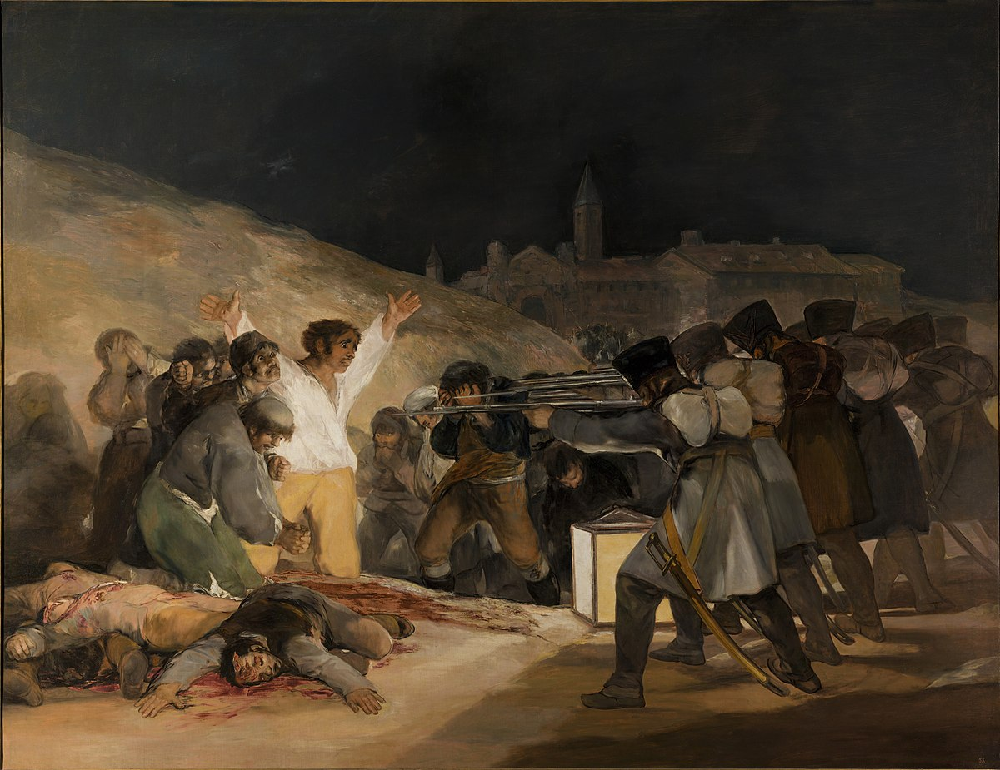

Os Fuzilamentos
Uma das obras mais importantes e impressionantes da carreira de Francisco de Goya, pela grande carga de dramaticidade.
O quadro mostra o fuzilamento de cidadãos espanhóis que se rebelaram contra a ocupação francesa liderada por Napoleão Bonaparte em 1808. Segundo Goya, este quadro teve como seu objetivo “perpetuar com o pincel as ações mais heróicas e notáveis de nossa gloriosa insurreição contra a tirania.”
À noite, uma fileira de soldados aos quais não se é possível ver o rosto, se preparam para executar os condenados à morte, as expressões vão de desafio a desespero. Porém a figura mais importante é a de um homem ajoelhado, que abre os braços aguardando seu destino. Goya não demonstra seus compatriotas com gigantismo, nem exagera mostrando soldados caricatos. A força da tela está em seu próprio conteúdo. O horror da cena em si é perpetua a bravura dos homens que serão assassinados e condenados a bestialidade dos militares franceses.
As pinceladas mais fortes e expressivas se revelam notavelmente nas vestimentas dos espanhóis. Principalmente na figura do mártir central e de seu companheiro com a cabeça protegida pelas mãos. Já os franceses estão pintados com cores neutras e mais uniformes, desta forma, Goya mostra sua simpatia pelos espanhóis.
Diferentemente dos franceses, os espanhóis são tratados de modo a provocar a compaixão e identificação do observador. Com o olhar apavorado, o homem de camisa branca levanta os braços em um gesto de crucificação que o identifica como Jesus Cristo. Olhando bem para sua mão, percebe-se um estigma em seu membro, destacando-o, assim, como um mártir.
Apesar da obra ter sido feita no ano de 1808, a mesma apresenta características bem atuais, atestando que as injustiças continuam, Jesus é colocado de forma subjetiva, demonstrando que assim como ele quantos outros morreram de forma injusta.
Mais sobre:
https://arteeartistas.com.br/o-tres-de-maio-1808-francisco-de-goya/